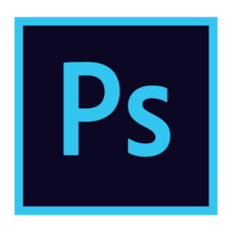

ABOUT

名前：三島 悠樹
年齢：２７歳
趣味：水族館鑑賞
私は前職では、派遣の製造業に在籍していましたが、
同じチームのモチベーションを上げ笑顔になるように
同じ趣味や仕事の事を話していました。
また、笑顔にするだけではなく自分の仕事のタスク化
を行い、自分が慣れた仕事なら10分でも早く終わり、
同じチームの手伝いをし生産数を5%でも上げて売上に
貢献していました。不具合などがあれば、リーダーにど
こが悪いのかを具体的に言いみてもらい直していました。
この経験を生かして周りのチームと協力し合い、お客様
とヒアリングを行い良いデザインを作りあげて行きます。
SKILL
-

-

-

Illustratorでのアイコン作成、パッケージデザイン作成やPhotoshopでのレタッチや加工、デザインカンプも出来ます。 また、XDを使用したデザインカンプの作成やデザインカンプからのコーディングも可能です。

HTMLの基本的なタグやCSSでデザイン道理のコーディングから、レスポンシブデザイン、CSSアニメーションでの動きが 可能です、また、Jquryの導入やスライダー、スムーズスクロールなどの実装も可能です。
Career
-
2013〜2015
ゲームの制作をしてみたいと思い奨学金を借りながらも神戸電子専門学校にて ゲームプログラミングやHTML、CSS、WordやExcelのことを学びましたが、 途中で挫折してしまいゲームプログラマーの道は諦めながらも派遣の製造職に 就くことにしました。
-
2015〜2020
派遣の製造職でプログラムとは別の物作りの方に一回方向を変え、仕事が落ち 着いている休みの時に専門学校で習ったHTMLやCSSで誰かの役に立つサイト を作れればと思い、少しずつ勉強したりしたりしていました。
-
2020〜現在
ゲームの制作をしてみたいと思い奨学金を借りながらも神戸電子専門学校にて ゲームプログラミングやHTML、CSS、WordやExcelのことを学びましたが、 途中で挫折してしまいゲームプログラマーの道は諦めながらも派遣の製造職に 就くことにしました。